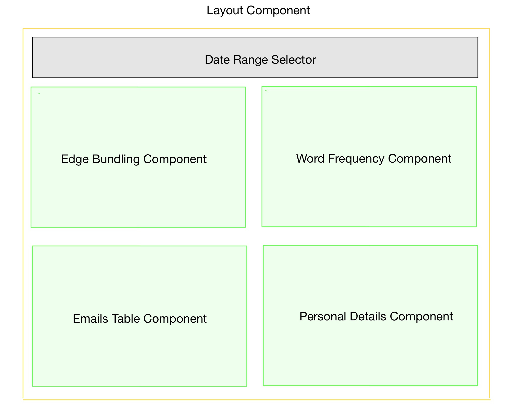

<div class="flex flex-col flex-auto min-w-0">
    <!-- Main -->
    <div class="flex-auto p-6 sm:p-10">
        <!-- Content-->
        <div
            class="flex flex-col border-2 border-gray-300 rounded-2xl mat-elevation-z8 bg-card px-5 py-5 justify-center"
        >
            <h2
                class="text-3xl md:text-4xl font-extrabold tracking-tight leading-7 sm:leading-10 truncate mb-5 pl-6 flex justify-center"
            >
                About This Project
            </h2>
            <div
                class="max-w-6xl p-6 pt-0 sm:p-10 prose prose-sm text-lg mx-auto"
            >
                <p>
                    This project was created as a final assignment for the
                    course Visual Analytics (2AMV10) at the University of
                    Eindhoven. The goal of this project was to create a visual
                    analytics tool to investigate patterns in email
                    communications and events on articles leading up to the
                    disappearance of GasTech Employees in the
                    <a href="https://ieeexplore.ieee.org/document/7042559">
                        dataset of VAST mini challenge-1 2014.
                    </a>
                </p>
                <mat-divider></mat-divider>
                <h2>Preprocessing</h2>
                <p>
                    Preprocessing was a lengthy and complicated process for this
                    topic, we discuss it in detail in the report.
                </p>
                <mat-divider></mat-divider>
                <h2>Code</h2>
                <p>
                    This project was based on
                    <a href="https://angular.io/">Angular</a> and
                    <a href="https://d3js.org/">D3.js</a>.
                </p>
                <p>
                    Angular is an opiniated JavaScript Framework for rapid and
                    type-safe development of UIs. It has a steep learning curve,
                    and is hard to follow for people who are not familiar with
                    it. We provide this section in order to give you a better
                    view on how to navigate the code structure.
                </p>

                <p>
                    D3.js is a JavaScript library for manipulating documents
                    based on data. It is used to create charts, maps, and other
                    visualizations. It is used in this project to create the map
                    and other visualization asepcts.
                </p>

                <p>
                    The code for this project is available on
                    <a href="https://github.com/SamAlhabash/vis-tool"
                        >Github.</a
                    >
                </p>
                <h2>Prerequisites</h2>
                <p>
                    In order to run this project locally, you firstly need to
                    have
                    <a href="https://nodejs.org/en/">NodeJS</a> installed.
                    Please navigate to the website and install the latest LTS
                    version. After that, you need to install Angular on your
                    system. You can find detailed instructions on how to do that
                    <a href="https://angular.io/guide/setup-local">here.</a>
                </p>

                <p>
                    Once you have these set up, Navigate to the root directory
                    of the project 'SPA' and run the following commands in
                    order:
                </p>
                <div
                    class="fuse-highlight fuse-highlight-code-container ng-star-inserted"
                >
                    <pre
                        class="language-bash"
                    ><code class="language-bash">npm install</code></pre>
                </div>
                <div
                    class="fuse-highlight fuse-highlight-code-container ng-star-inserted"
                ></div>
                <div
                    class="fuse-highlight fuse-highlight-code-container ng-star-inserted"
                >
                    <pre
                        class="language-bash"
                    ><code class="language-bash">npm start</code></pre>
                </div>
                <p>
                    And Voila! After the project finishes building, you can
                    navigate to
                    <a href="localhost:4200">localhost:4200</a> and view the
                    project.
                </p>
                <h2>Note on Template Usage</h2>
                <p>
                    In this project, we used the
                    <a href="http://angular-material.fusetheme.com/"
                        >Angular Fuse Template</a
                    >
                    to provide a robust out-of-the-box layout for our project. A
                    member of our team owns a license to use this template in
                    any non commercial setting. We decided that using a template
                    would save us some effort of doing work that is not related
                    to visualization. Documentation on the template directory
                    structure can be found
                    <a
                        href="http://angular-material.fusetheme.com/docs/guides/development/directory-structure"
                        >here.</a
                    >
                </p>
                <h2>Code Conceptualization</h2>
                <p>
                    Before we explain the actual code, This conceptual view
                    might help the reader understand the architecture behind our
                    project. -Excuse the awful drawing skills, Thank goodness
                    this is no art class!-
                </p>

                

                <p>
                    The picture above shown the architecture of the project. The
                    <span style="color: #d2c11b">Layout component</span> is
                    provided by the template and will not be discussed further.
                    It only offers basic navigation and error interception
                    services.
                </p>

                <p>
                    The rest of the components, that is
                    <span style="color: green">The green rectangles</span> are
                    all independet compoenents that manage their own states and
                    events based on the input from the
                    <span style="color: #d2c11b">Layout component</span>. This
                    architecture allows the code to be easily understadable as
                    the ways of communication between different components are
                    strict and predefined. If a
                    <span style="color: green">A child component</span> wants to
                    do something with another components view, it requests that
                    change from the
                    <span style="color: #d2c11b">Layout component</span>.
                </p>
                <h2>Actual Code</h2>
                <p>
                    Our code lives in the
                    <code>src/app/modules/admin</code> directory. The child
                    components mentioned in the previous section live in the
                    <code>src/app/modules/admin/main</code> directory. The
                    states of all components are managed by them independetly
                    based on inputs from the Visualization Component. The
                    children can request data from The
                    <b>The Data Service</b> that lives in the
                    <code>src/app/modules/admin/main/data-service</code>
                    directory. The data services parses the preprocessed data in
                    <code>src/app/modules/admin/main/data/json</code>
                    and provides the exact data that the requesting component
                    needs, keeping optimal performance.
                </p>
            </div>
        </div>
    </div>
</div>
